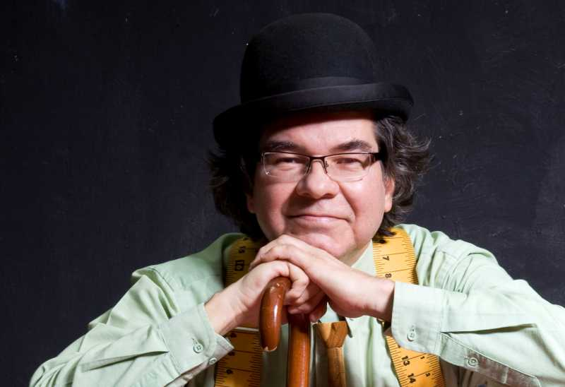
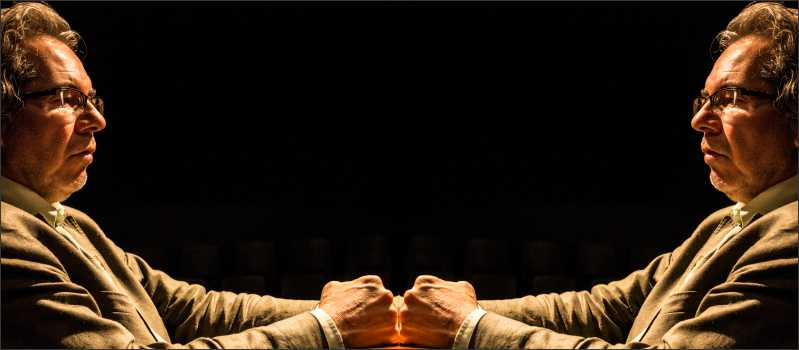
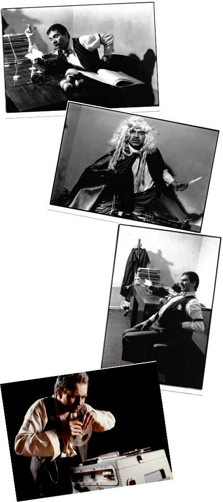

Ramiro Tejada
De derrota en derrota hasta ¿la victoria/derrota final?
Por Cristóbal Peláez González
Transcripción: Karen J. Crespo
Uno no se lo imaginaría quieto recibiendo con aplicación clases de jurisprudencia. Pero la academia también hace milagros y logró doctorarlo. Es un pleitero con una inmensa conciencia social que se rebulle en las sábanas teatrales como actor, director, crítico. Puede ser también el espectador con mayor kilometraje que tenemos en la ciudad porque posee, como él mismo apunta, el don de la ubicuidad que lo pone en todos los espacios por donde crepita el caldero cultural. Excéntrico e inevitable, también odiado o querido, Ramiro Tejada es capaz de realizar cualquier tipo de funambulismo con tal de no pasar inadvertido. A los que lo maldicen hay que recordarles que no obstante su estrafalario comportamiento hay un más allá esencial donde encontramos a un hombre comprometido con el conjunto teatral de la ciudad, solidario como creador y profesional.
“Yo: …madre …ahora que la mencionas, te digo que
me queda muy difícil hacerme a la idea de que alguna vez, cual personaje teatral,
hayas salido del vientre de una mujer.
Ramiro Tejada: Si güevón… ¿entonces broté de una hiena o qué?”
--------------------------------------------------------------------
“Ramiro Tejada: Ahora justamente estoy de trasteo y es sabido
que tres trasteos equivalen a un incendio.
De todos modos si te enterás por ahí de alguien que quiera compartir casa conmigo, me avisás.
Yo: No creo que exista ser humano en el planeta que quiera compartir vivienda con vos.
Ramiro Tejada: (Mirada desafiante. Intenta decir algo. Silencio)”

Escena I
Para fortuna o desgracia de muchos, Ramiro Tejada se sube al carro de Tespis
Esto ya había empezado cuando llegué, habían pasado los maestros, había trascendido ese gran montaje de Gilberto Martínez, Revolución en América del Sur de Boal, yo estaba nuevecito y ya se hablaba de Edilberto Gómez, de Yolanda García, de Luis Carlos Medina, del propio Fernando Velásquez con quien luego tuve la suerte de trabajar en Réquiem por un girasol, de Jorge Díaz, obra que impactó.
Estaba estudiando Derecho en la Universidad de Medellín y ahí en una huelga estudiantil me tropecé con el teatro, vi a Bernardo Ángel de La Barca de los Locos en el auditorio lleno haciendo El daño que produce el tabaco, de Chejov, con unas voces y un registro maravillosos, pleno dominio del público estudiantil, al mismo tiempo concurrían unos teatros muy panfletarios y entre tantos aparece El Grupo, de José Manuel Freidel con Las medallas del General, donde también actuaban Marina Gutiérrez y Nora Quintero. A mí en ese entonces, te digo, me pareció una locura genial ver a tres personas en un escenario haciendo múltiples personajes. Qué descreste. Terminada la función convocaron a quienes quisieran participar de El Grupo y de inmediato respondimos estudiantes de diversas áreas, economía, educación, derecho, que estábamos alborozados con esa irrupción de un teatro político revolucionario. Ese fue mi enganche definitivo con el teatro.
Freidel en la preocupación por el éxodo campesino escribió y se proponía poner en escena Amantina o la historia de un desamor, le dijimos que estábamos preocupados por un tema más cercano a nosotros, la educación, pues había un registro de 180.000 niños con déficit de aula escolar y de ahí nace una obra alterna a.e.i.o.u, con la cual fuimos a unas jornadas en Córdoba (Freidel no viajó porque se enloquecía con el calor. Acotación de redacción: ¿solo con el calor?). Se trataba de un festival muy popular donde los grupos teníamos que hacer la revolución en la escena para no ser tildados de reaccionarios. Nos movíamos entre Lorica, Sahagún y Montelíbano, donde nos alojábamos todos como gusanos de cosecha en aulas del Inem. Tan importante o más que la obra de teatro eran los foros de cierre, interminables, muy políticos, a veces nos daban las tres de la mañana en esa discutidera.
Por esos lares había ya transitado Freidel con la obra Desenredando sobre las tomas campesinas de tierras y en Ovejas (Sucre) encanaron a todo El Grupo. Tremendo susto se llevaron pensando que se iban de tortura.
Fuimos agitadores siempre, todavía recuerdo un domingo día de madres en la carpa de huelga de Satexco en Itagüí a las tres de la tarde, con ese calor, al pie de una olla de sancocho presentando teatro, dizque tratando de que los obreros tomaran conciencia y ellos a un lado embelesados jugando a las cartas.
Escena II
El teatro de los años setenta y pico en Medellín
Una escisión muy fuerte del Partido Comunista creó un frente cultural amplio conocido como La Muestra, que reunía pintores, actores y escritores. Allí brillaba el grupo de música La muralla, que tomaba su nombre del popular poema de Nicolás Guillén. Era una gran efervescencia política. En el 77 se crea La Fanfarria, resultado de una fusión entre El Grupo de Freidel y Títeres Renacuajo de Jorge Luis Pérez que ya venían trabajando muy juntos, y alquilan en Villa Hermosa, La Mansión, una casa con lote y levantan una salita para cien personas con puro recicle de las teleras de Sofasa Renault, lo más bonito es que también tenía la sede una galería para exposiciones. (Acotación de redacción: Todavía no se ha hablado del rol que jugó el tríplex donado por Sofasa en la infraestructura de las salas de teatro de Medellín. De esos segundazos salían mágicamente escenografías, gradas, biombos, escenarios, techos y hasta en los atardeceres las astillas que alimentaban los fogones en que se reunían las hambrientas bocas de los actores, los nuevos libertos de la producción fabril).
Pagábamos de arriendo no sé cuánto. ¿3.000 pesos? Después lo subieron a $16.000 y eso salía todo de nuestros suelditos que teníamos en otras actividades. Estamos hablando de la época en que nosotros mismos subvencionábamos el gusto de hacer teatro.
Debo decir que Amantina, un hito en la historia del teatro de Medellín, es la obra, hasta donde sabemos, donde se registra el primer desnudo, con la actriz Marina Gutiérrez. En la Facultad de Medicina hubo escándalos, pero era un desnudo sencillo, no de exhibición, se trataba de la simple transición de la actriz en un cambio de vestuario.
De a.e.i.o.u lo que más recuerdo es la escena surrealista del maestro que se queda sin alumnos y saca de su maletín unas hormigas para enseñarles a leer.
Freidel se había estrenado como dramaturgo de títeres con Tragedia en tres actos del sapo desdichado que fue un fracaso total. Otro fracaso fue Los duraznos son duros de roer, ¿verdad Clotalda? escrita a partir de una anécdota que nos contaron unos presos en una función que tuvimos en la cárcel de Bellavista. Era la historia de un par de viejitas que se roban un banco y empieza una a hurtarle la plata a la otra para comprar duraznos. La escenografía era muy bonita, pues siempre existió una relación muy interesante con las artes plásticas. Cuando hicimos Las burguesas de la calle menor trabajamos con María Teresa Cano, muy cerca siempre estuvo Luis Fernando Peláez, después Freidel empieza a consultar todos sus proyectos escenográficos. Las arpías, a partir de Las criadas, de Genet, es con escenografía de Doris Salcedo, que es, a mi parecer, lo más importante que tenemos en las artes plásticas hoy en Colombia. A Freidel terminó no gustándole lo que hizo con Los duraznos son… y como era de una neurosis absoluta botó la escenografía a la quebrada La Mansión.
Freidel escribió treinta y cinco obras. Su versión de El padre Casafús o Luterito, de Carrasquilla, fue su puesta en escena póstuma. Avatares, desconocida para nosotros, su última dramaturgia, estaba en su mochila cuando cayó muerto. Alguien la recuperó, la trajo a La Exfanfarria, allí también estaba intacta su agenda que aún guardaba el chequecito del último pago de la EPA. (Acotación de redacción: A la palabra “chequecito” Ramiro le imprime un indescriptible acento de piedad, de recuerdos, de amistad. Pausa. Transfigura su cara).

Escena III
Tribulaciones de un abogado que quiso ser actor o el oloroso caso de la manzana verde.
Me titulé de abogado en el 86 y Freidel decidió escribirme el caso de la defensa de la señora que mata al marido porque después de veinte años de matrimonio el hombre se aparece con una manzana verde. Ella lo pica como a una manzana. Cuando me la entregó le increpé “¿pero cómo así? ¿cómo que quiso ser actor?, ¡que quiere ser actor!”, “!Peor Ramiro! —me dijo él—, déjelo así, quiso”. Era su venganza porque sabía que lo abandonaba y me iba a ejercer a Bogotá. Empecé a ensayarla solo. Abría el bar Salomé, de Cesar Pagano, que andaba “tanquiando” trópico en la Habana, y dio la casualidad que dos de los meseros eran actores de Mapa Teatro. Llegábamos temprano, limpiábamos, organizábamos todo el bar y nos dábamos a ensayar. Freidel desde Medellín hacía todo el seguimiento de puesta en escena. La estrenamos en mayo del 88 en La Candelaria. Ahí empieza mi itinerancia con la obra que por estos días pasa de quinientas funciones, sigue viva en la medida en que yo estoy vivo, así a veces me duela la artrosis y me quede difícil acuclillarme. La he representado en Cádiz, en Argentina, para pequeños y grandes públicos. Para cada función me tocaba comprar una caja de sesenta manzanas verdes. Hasta que me harté de comer pie de manzana y ahora las alterno con icopor. En Urabá fue impresionante, un público de solo niños y todos ellos tratando de subir al escenario a comerse las manzanas. ¿Cómo los ponía a mascar icopor?
Como actor he incursionado con otros grupos y directores, Romeo y Julieta, con Farley Velásquez; La última cinta de Krapp, con Jaiver Jurado; Crash, la escalera rota, con Henry Díaz; y Telarañas de Pavlovsky con Nelson Pérez y la Casa del Teatro que es, vaya ironía del oficio, la única vez en la vida que me pagan un sueldo por actuar. Freidel nunca se ganó ni un peso con sus obras, él las tenía que costear de su bolsillo.

Escena IV
La incursión como director teatral
Estuve tres meses en Cuba estudiando dirección de actores con Rafael López Miarnau que era un excombatiente de la guerra civil española. Mis amigos hicieron vaca para darme el tiquete de ida, no me dieron el de regreso, ahí se ve cuánto me quieren en Medellín. Claro que mi intención inicial era participar en un taller con Augusto Boal en la escuela de cine de San Antonio de los Baños, al cual no pude acceder. Claro que no me puedo quejar porque allí, aparte de todo lo que aprendí, conocí gente maravillosa empezando por López Miarnau y Jaime Osorio, el director de Confesión a Laura.
Mi primera experiencia es La visita y después Las arpías que es más una redirección. En la que me ensayo como director y dramaturgo es en Al alba, ritual de empatía por un corazón prisionero. Finalmente hice Sueño de una noche de teatro, que muchos calificaron de burla, de caricatura, pero era un proyecto de academia itinerante en bicicleta contando la historia del teatro. No funcionó.
Escena V
De espectador impertinente a espectador sosegado.
¿Usted también era de los que iba a sabotear los festivales como Freidel?
Me tuve que separar de Freidel y su combo porque entraban a las obras a gritar y a silbar. Se salían a los pocos minutos de todas las obras, eso cuando no era que los acomodadores los sacaban.
En las partes silenciosas, pausadas, se paraban haciendo todo tipo de ruidos.
“El último que salga, apague la luz”, decían ese tipo de cosas. En la Universidad de Antioquia, en un ejercicio de Sanchis Sinisterra, aquello llegó a la agresión física, Freidel terminó con un puñado de arena en los ojos. Les encantaba el escándalo y las batallas campales. (Acotación de redacción: Freidel y su combo zapateaban, gritaban “qué obra tan aburridora”, bostezaban sonoramente. Un director de un conocido grupo llegó a decir que por precaución mantenía detrás de la puerta un garrote para estamparlo en las nucas de Ramiro Tejada y Freidel.)
¿Les encantaba o nos encantaba? Usted también ha sido un saboteador.
(Rojo de la vergüenza, mentiroso) No, no, yo no.
Que sí hombre, que sí.
No sé, no recuerdo.
Sí, Ramiro, seguro.
No, no, he dicho cosas en voz alta, pero no saboteo.
¿Entonces porque te ponés tan rojo en este momento?
(Ríe) He mentido, me pusiste el detector de mentiras. Ese capítulo lo he olvidado en mi vida.
Claro, tenés fama de impertinente.
Pero fíjate que son actos cariñosos, por ejemplo en Manizales frente a María Meneo de La Zaranda, subí al escenario, me quité el sombrero y me arrodillé, un tributo de espectador exaltado.
Un estrafalario
Sí, he sido excéntrico, rayando con el código de policía.
Y los gritos que a veces lanzás.
(Más rojo todavía) No sé, recuérdamelo.
Y también las trifulcas que armás cuando el público es el que te increpa.
Alguna vez me estaban saboteando una representación de Casafús en pleno sermón con esas cadenas y me bajé y los enfrenté: “respeten hijueputas, el actor es un ser más letal que el alcanfor”. Hasta ahí llegó el programa de formación de públicos.
Para que recuperes el color de tu cara te voy a cambiar el tema. Sóngoro cosongo creo que podés ser el medellinense que más obras de teatro ha visto.
Sí, sí. Pero me duele que también he dejado de ver muchas, qué vaina, cómo me duele perderme las obras de teatro.
También sos el único que puede exhibir un buen trayecto como crítico teatral, la prueba está en tu libro Jirones de la memoria.
Escena VI
La labor de un cineclubista
Como una herencia del Cine Club de Medellín de Alberto Aguirre se funda en el 77 por Álvaro Sanín el Cine Club Ukamau, al que yo me engancho pocos años después. Es un período de fiebre cineclubista, Mundo Universitario pasa sus películas en el Cine Dux y nosotros en el Ópera, había nacido ya la Cinemateca El Subterráneo que está en la memoria de todos. Mis nociones rudimentarias de cine se remontan a mi barrio, La América, en el Cine Santander y también a las películas itinerantes que se proyectaban en las paredes por cuenta de pastillas Mejoral.
Lo clásico y obligatorio en los cineclubes, y Ukamau no fue la excepción, eran los foros, espacios donde la gente se pudiera expresar y obviamente también eran muy politizados. Recuerdo cómo celebramos el día internacional del teatro con la proyección de Marat Sade de Peter Brook que constituyó toda una novedad, porque el cine que traíamos no circulaba comercialmente. Hicimos el primer ciclo de cine homosexual en Medellín y eso fue el rebose total, devolvíamos público. También ciclo de cine polaco y otro de cine cubano. El texto de cabecera de aquella época era el texto de Julio García Espinosa, Por un cine imperfecto. Como dato curioso te cuento que al mismo tiempo nos desempeñábamos como inspectores de Focine, verificando que en las salas se cumplieran con las proyecciones de los cortos de sobreprecio que se hacían al comienzo de cada sesión para el recaudo del estímulo al cine nacional. Teníamos un carnet que nos permitía entrada a todas las salas, estábamos en contacto con los personajes más importantes del cine nacional, Hernando Salcedo Silva, Luis Alberto Álvarez, Jorge Silva y Marta Rodríjuez, que fueron pioneros con sus Chircales, entonces recibimos el primer curso de apreciación cinematográfica y firmamos diploma.
Menciono películas que han marcado mi vida: Amarcord, de Fellini, Viridiana, de Buñuel, Novecento, de Bertolucci, El pez que fuma, de Chalbaud, Memorias del subdesarrollo de Gutiérrez Alea, Alphaville, de Godard.
Escena VII
El peripatético que ronda la ciudad
Me gusta llamar la atención, no pasar desapercibido. Me encanta la ropa holgada, talla de otro muerto, ponerme la camisa por fuera, los sombreros, las plumas, las gafas estrambóticas. Me gusta el esmoquin elegante. A veces me gusta generar antipatía, sé que me dicen loco, chiflado, ridículo y todo eso, pero cualquier cosa con tal de no pasar inadvertido. Sé que a veces puedo ser impertinente pero no estoy poniendo allí la semilla del odio sino de la inconformidad. Hasta un reconocido hombre de teatro alguna vez no me quiso dar la mano y le dije: “hombre, acabamos de salir del sepelio de un amigo tuyo y te quiero dar la mano”, me gritó “¡hipócrita!, ¡hijueputa!”. A veces cuando me chiflan o me insultan me hago el güevón. Una vez me iban a cascar en Carlos E. Restrepo y me teatralicé como un zapatico, me hice el cobarde, el bobo, el loco, eso los ahuyentó, pues me mimeticé. Pero también puedo airarme cuando toca pues siempre he intentado ponerme del lado del débil, el Derecho me ha llevado a eso, fui defensor de Derechos Humanos con la Personería de Medellín. Subía todos los jueves a Bellavista, hacía fiestas con mis presos, les ofrecí mi obra de teatro. Tengo rituales con ellos. Soy abogado de causas perdidas. He perdido algunos pero también me he ganado unos bellos casos. Muchas veces he ido en plan teatro a las audiencias, de histriónico, por eso John Saldarriaga en El Colombiano escribía: “Actor y abogado, dos sobre el mismo tejado”.
Escena VIII
Las audiencias judiciales como escenario teatral.
Sí, como defensor público me desempeñé como personero delegado, fui director de una unidad que se llamaba UPIP (Unidad para la Protección e Interés Público) que tenía que ver con capacitaciones, formación de líderes, inclusive diseñamos unos diplomados de derechos y del sistema acusatorio, ahí también he sido docente en el suroeste en formación jurídica básica y he dictado seminarios con diplomas de derechos humanos en la comuna 8. Tuve muy buena escuela con Álvaro Sanín, un apasionado de los derechos, y con Jesús María Valle que, siendo conservador, defendía con ahínco los presos políticos. Me caló hondo porque fue capaz de sacrificar su vida por la justicia, como también Fernando Vélez, asesinado. Alguien se atrevió a decir que era un crimen pasional y no un crimen de estado, eso me indignó, él, que había recibido las banderas de Héctor Abad y de Carlos Gaviria.
Escena IX
De derrota en derrota
Me lancé como candidato a la alcaldía para llamar la atención, ¿en qué sentido?, señalarle a la ciudad y a los medios la importancia de la actividad cultural. Eso fue un embeleco, impulsos. Teníamos una oficina de abogados, al lado había una contadora, llamé a tres amigos para que me acompañaran a la Registraduría a la inscripción justo el día en que se cerraba. Les dije voy a ser el alcalde del ocio, de la ternura ¿quién habla de la ternura en esta ciudad de balaceras?, hablamos de preparar la ciudad para batallas de ternura, porque la ternura es el apio del pueblo, de derrota en derrota hasta la victoria final, una forma de hacer “happenings”, golpear con el teatro la realidad. En la campaña llegamos en comitiva al barrio Carlos E. Restrepo en un coche mortuorio, que la funeraria San Vicente nos había prestado incluidos candelabros grandes, unas antorchas impresionantes. A la manga del Museo de Arte Moderno de Medellín le pusimos un tapete blanco que medía como cien metros, e hicimos el banquete de la derrota, las alcachofas y la pimienta regada, era un asunto muy simbólico. En video pasábamos esa maravillosa escena de Chaplin en La quimera del oro cuando cuece un zapato para su cena. La campaña política era eso, un happening.
Me niego a creer que mi candidatura fuera una metida de pata, provocamos una reflexión sobre el asunto cultura.
Mis dos únicas metidas de pata se resumen en esto: la primera cuando me casé, la segunda cuando me separé.
Entrevista tomada de la edición No. 29 del periódico de Medellín en Escena